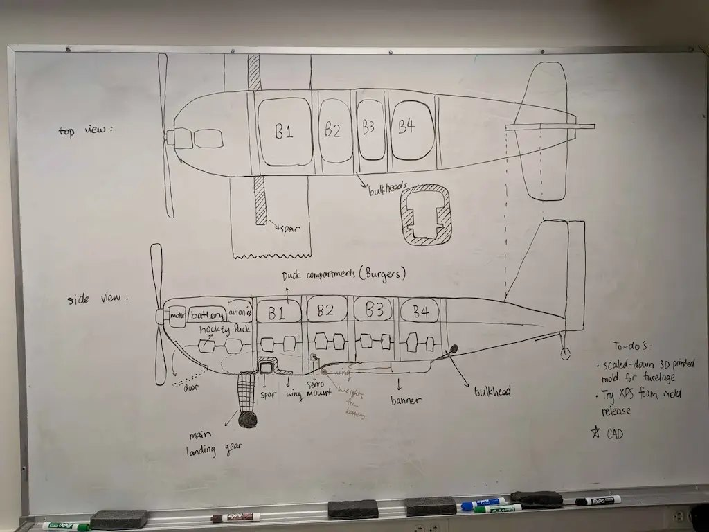
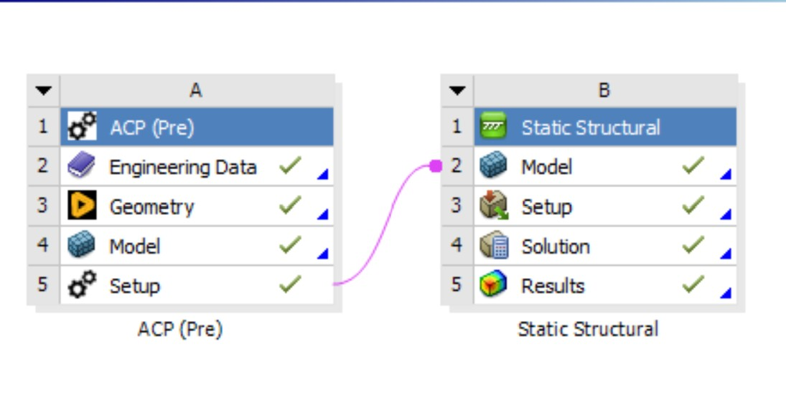
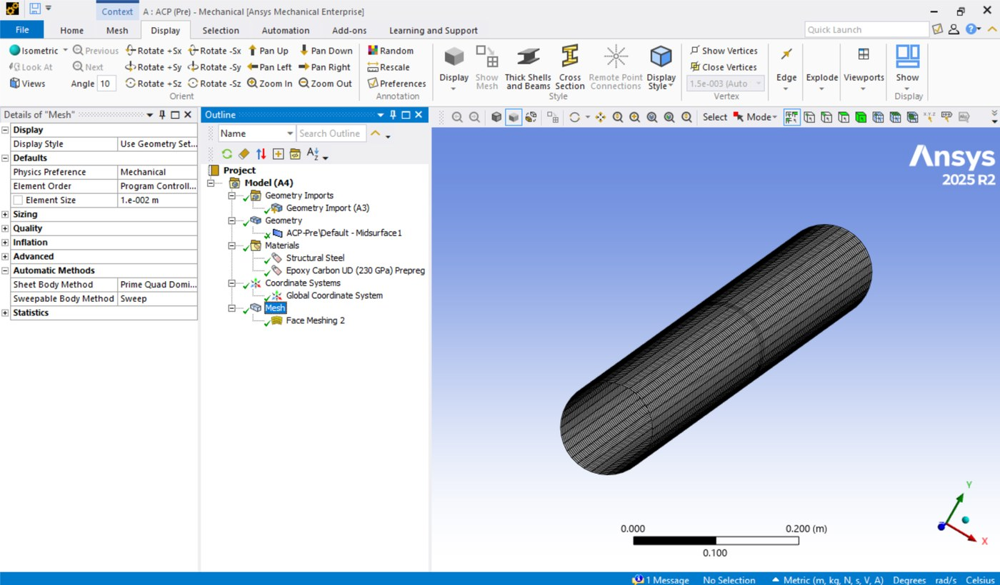
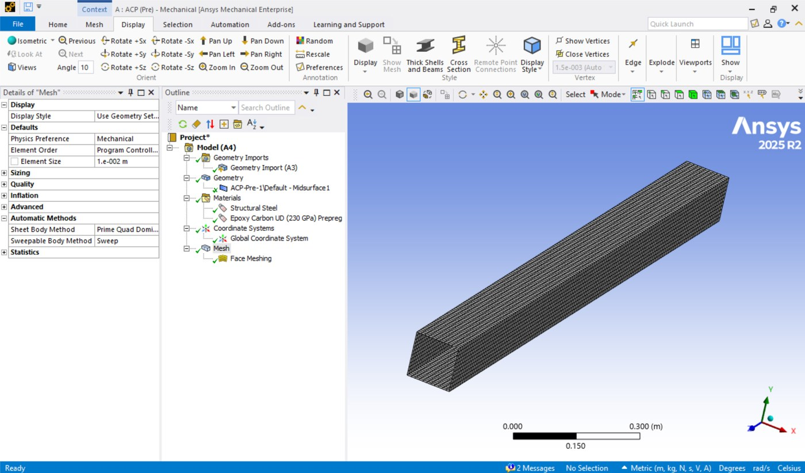
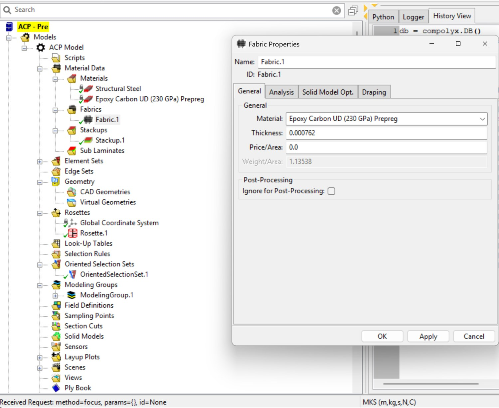
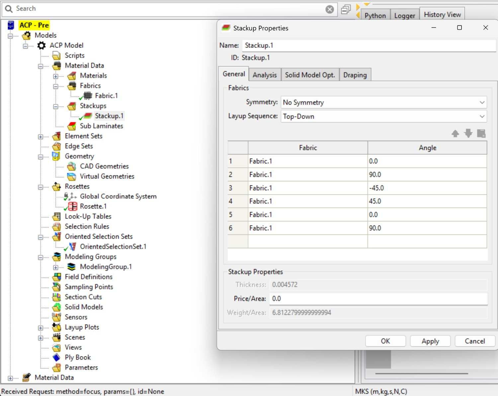
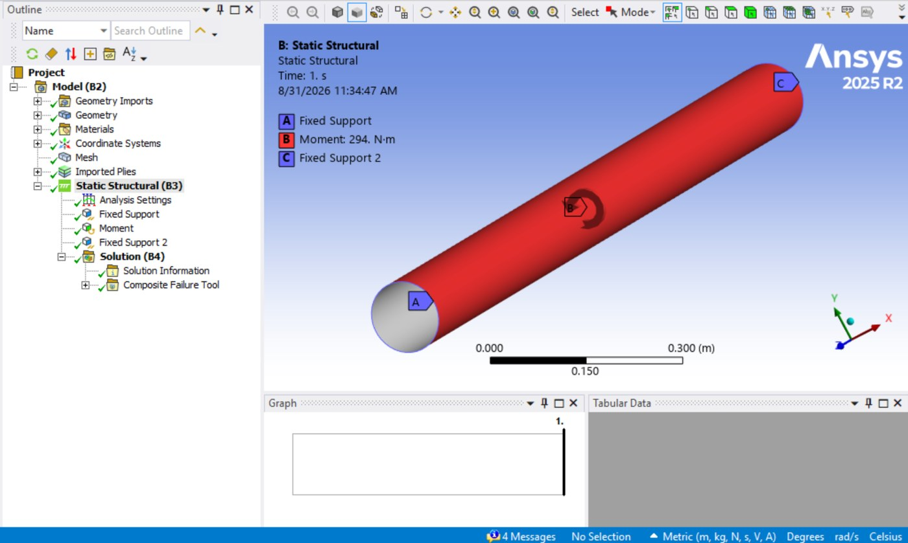
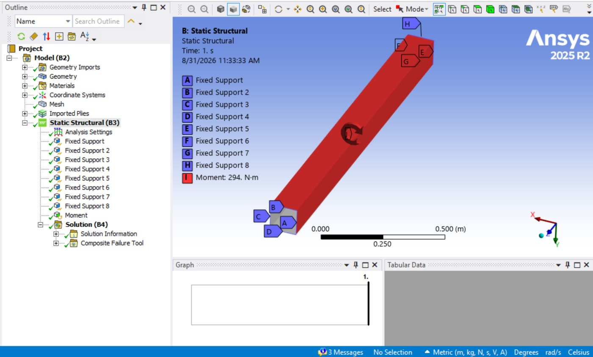
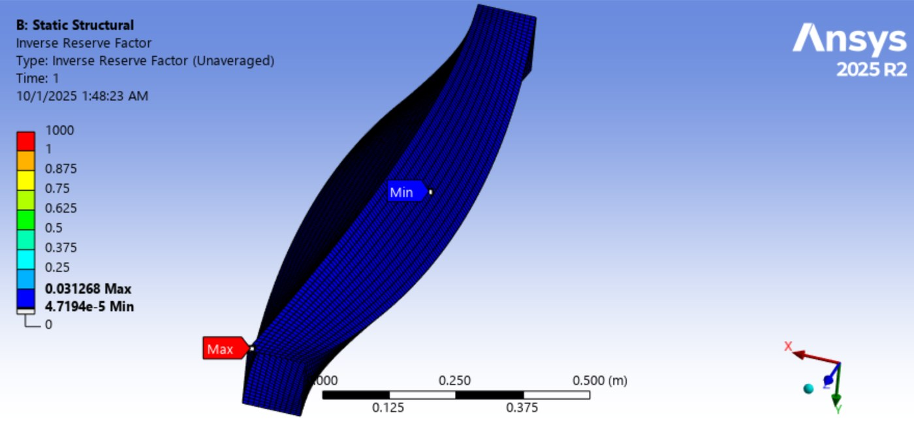
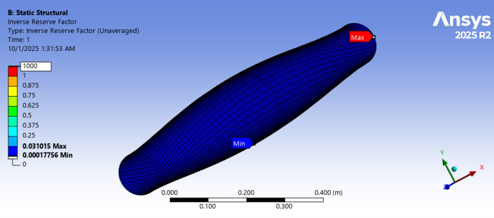

Design Build Fly
Finite Element Analysis and Optimization of Fuselage Structure
Before we manufactured the full fuselage for our competition plane, the chief engineer of our Design Build Fly team asked a critical question, “Would a square or circular cross-section of the fuselage be less likely to fail when twisted under wind?” This significantly impacted our carbon fiber layup process: a fuselage with a square cross-section would have a much simpler mold than could be milled, whereas a circular fuselage would require a tube that makes the layup more complex.
The assumption was that a square fuselage would be far less safe as circular cross-sections generally handle torsional moments better. Since this year was our first time experimenting with carbon fiber, we wanted to see if we could maximize ease of manufacturing without putting our plane at a mechanical disadvantage. We also had already spent several weeks designing the plane with a square fuselage.

Our chief engineer had performed the torsional calculations, but there was still enough doubt that I proposed to simulate these cross-sections in Ansys Mechanical. While I had utilized Fusion 360 FEA software for materials like steel, I had never applied it to anisotropic composite materials where the direction of fibers matters. After some research, I discovered Ansys Composite PrepPost.
I defined the work process Ansys must execute to get from defining the composite part to performing a static structural test.

For “Engineering Data,” I verified with the chief engineer what type of carbon fiber to use and which properties, mainly density. The material is Epoxy Carbon Unidirectional (UD) since I later define each direction independently.
For “Geometry”, I designed a tube shell in CAD for both the square and circular cross-sections, extruding the length of our proposed fuselage design. Shells are used since the thickness of the carbon fiber is very small compared to the other dimensions. I imported this geometry into a model, where I was able to assign the material (Epoxy Carbon UD) to the geometry. I created a face mesh on the shell surfaces, setting a conservative mesh element size of 0.394 in/0.01 m (roughly 5000–6000 nodes) for both geometries.


For ACP “Setup”, I was able to assign the material, which automatically inputs the relative thickness of a single laminate. There are 6 laminates, so this thickness is multiplied by 6. Most importantly, I define the directions of each laminate. The chief engineer informed us that we would be using layers of 0/90, -45/45, 0/90 woven carbon fiber, based on his experience in an internship. I entered those values in and set up a “Rosette” to attach those directions to an origin on the geometries.


Now, I transferred the ACP “Setup” to “Model” in the Static Structural section. Here, I established the load and boundary conditions of the simulation. The loading condition was clear as per my chief engineer's original question: a torsional load about the center of the fuselage. At the same time, he clarified that both trailing edges of the fuselage would be fixed during this test. In fact, after manufacturing, we did another physical test twisting the fuselage ourselves. I set a torsional load pressure of about 294 N·m across the length of the tube (1.473 m), or about 200 N (45 pounds-force), to emulate intense wind conditions.


While equivalent/von Mises stress and deformation can be helpful, the Inverse Reserve Factor is an equivalent “Safety Factor” for composite materials, so it is more descriptive in this case. Any Inverse Reserve Factor greater than 1 indicates failure of the material.


Notice that the max inverse reserve factor is 0.031015 for the circular cross-section and 0.031268 for the square cross-section. It's understandable why the square cross-section is more likely to fail since there are forces perpendicular to the fibers, while for the circular cross-section forces mostly align with the direction of the fibers. The most important finding from this simulation is that the inverse factors vary by only 0.000253. This shows that redesigning the fuselage to a less manufacturable circular cross-section design for the fuselage is not mechanically necessary.